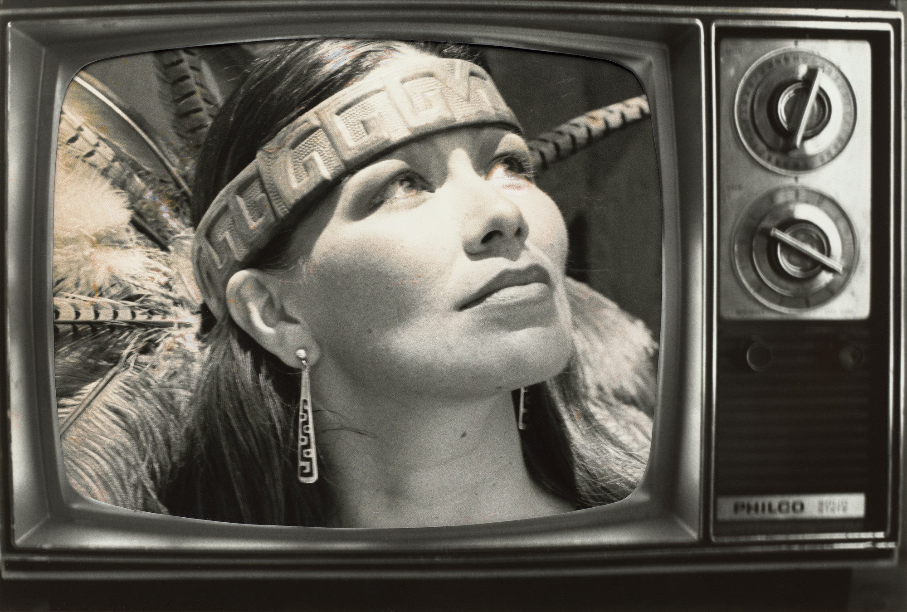

Tanaya Winder
Artist
Tanaya Winder is an artist and educator. Winder is from the Southern Ute reservation in Ignacio, Colorado and a proud member of the Duckwater Shoshone Tribe. Winder's heritage encompasses Southern Ute, Pyramid Lake Paiute, Diné, and Black roots. Winder's creative focus revolves around the multifaceted concept of love, exploring various dimensions such as self-love, intimate love, social love, community love, and universal love. Her artist statement reads as follows "When envisioning an Indigenous future, I see us as happy, healthy, and thriving. We acknowledge our past soul wounds and continue to heal and grow from them. For this project, I took some of my more well-known poems that address the epidemic of murdered and missing Indigenous women. I did the erasure poem technique on these poems and blacked out all the parts that reference us being taken, murdered, or stolen. I then took the words that were left to create a new poem “To fill the silence, sing softly.” In the future, in the end – love wins. We are able to “sew new memories into old scars,” and our mouths hold all of our stories and songs, our fire. We carry our stories and we keep breathing."
Extraction
A poem by Tanaya Winder
"I never limited myself to one thing, but the steelwork was hands down my favorite. I was capturing the history and culture of my people throughout Washington state, and I loved it.
-Virgil “Smoker” Marchand

Virgil “Smoker” Marchand
Painter and Sculptor
Marchand, a member of the Arrow Lakes Band of the Colville Confederated Tribes, portrays the traditions of his people through both paintings and steel sculptures. A craft he has mastered over 50 years. His artwork has been displayed along highways, parks, and buildings all across the Pacific Northwest and Canada. Marchand focuses on capturing the rich history and culture of his people in Washington state.


"My role could be described as responsibility... as a responsibility to ‘feed the people.’”
-Delbert Miller
Delbert Miller
Singer, Carver, Drummer
Delbert Miller is an artist and cultural bearer of the Skokomish tribe. He refers to his work as both a calling and a career. His roles as a singer, carver, drummer, and keeper of tribal ancestral history reflect his commitment to preserving the traditional legacies passed down by his elders. Delbert works with a group of Salish apprentices, guiding them in the spiritual aspects of carving and preserving the endangered art form of Tsaqt3d. Delbert's dedication to preserving the art, carvings, drumming, songs, and traditions of his ancestors is fueled by a belief that these traditions will endure. Focused on teaching Skokomish youth about canoes, protocols, and cultural teachings, he sees his students willingness to learn as a positive sign for the future. Delbert emphasizes the importance of identity and history as foundational keys, instilling a sense of belonging and cultural pride in the younger generation.
Hulleah Tsinhnahjinnie
Artist
Tsinhnahjinnie, born into the Bear Clan of the Taskigi Nation, and Tsinajinnie Clan of the Diné Nation, is a multi-media artist most well known for her photography. Tsinhnahjinnie claims photography and video are her primary languages. She crafts visual representations of Native perspectives, emphasizing the importance of art as a means of communication for Indigenous communities. The image to the right is the first in a series called NTV, or Native Television. Entitled Vanna Brown, Azteca Style, Tsinhnahjinnie is creating what she desires to see on television. This particular piece is a play on the Wheel of Fortune co-host Vanna White.
"No longer is the camera held by an outsider looking in, the camera is held with brown hands opening familiar worlds. We document ourselves with a humanizing eye, we create new visions with ease, and we can turn the camera to show how we see you."
.-Hulleah Tsinhnahjinnie
"My art reflects a connection to my tribal cultures and to the natural world of our indigenous homelands. Using exciting vibrant mixtures of color, I combine elements of tribal designs, traditions, and landscapes, to express a place where the present, past and future come together with Earth and Spirit. My art speaks of renewal and transformation as well as a continuation of old tribal beliefs and ways. This continuum of culture is revealed in my paintings through new expressions of traditional and contemporary experiences, issues and perspectives."
-Lyn Risling
Lyn Risling
Artist, illustrator
Lyn Risling has woven her art with the rich cultures of her Karuk, Yurok, and Hupa heritage in Northern California. Descended from ceremonial leaders, Risling has participated in her Native culture for many years and has been an active participant in the renewal of tribal ceremonies and traditions. Risling received the Community Spirit Award from First Peoples Fund for her art and dedication to her Native culture. Risling paintings offers a glimpse into her tribal heritage. Her art navigates decolonization while revitalizing native traditions, striking a balance between renewal, balance, transformation, and continuation. Risling uses vibrant colors and tribal designs as a mean of bridging the physical and spiritual realms--- connecting the past with the present